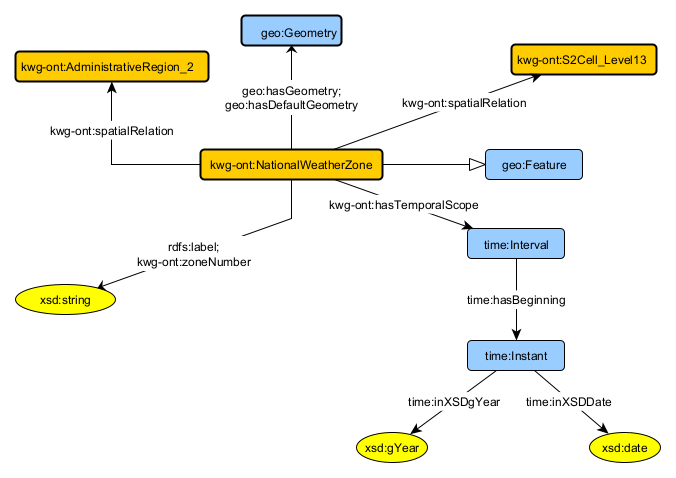

language en
Ontology for NOAA's National Weather Service Public Forecast Dataset
Release 2023-12-06
- Latest version:
- http://stko-kwg.geog.ucsb.edu/lod/ontology/noaa-national-weather-zone
- Revision:
- v 3.0
- Authors:
- The KnowWhereGraph Project
- Contributors:
- Shirly Stephen, Mitchell Faulk
- Download serialization:


- License:

- Cite as:
- The KnowWhereGraph Project. Ontology for NOAA's National Weather Service Public Forecast Dataset. Revision: v 3.0.
Ontology Specification Draft
Overview of the raw dataset back to ToC
- Name of dataset:Public forecast zones
- Source Agency: National Weather Service
- Data source location: Public forecast zones download
- Metadata description: Public forecast zones download metadata
- Type of data source: Shape files
- Format of data returned:.shp files
- Data update interval: monthly random updates
Schema Diagram

Figure. NWS National Weather Zone Schema Diagram.
Cross reference for Ontology for NOAA's National Weather Service Public Forecast Dataset classes, properties and dataproperties back to ToC
This section provides details for each class and property defined by Ontology for NOAA's National Weather Service Public Forecast Dataset.Classes
Data Properties
national public forecast zone numberdp back to ToC or Data Property ToC
IRI: http://stko-kwg.geog.ucsb.edu/lod/ontology/zoneNumber
Legend back to ToC
c: Classes
op: Object Properties
dp: Data Properties
ni: Named Individuals
op: Object Properties
dp: Data Properties
ni: Named Individuals
Acknowledgments back to ToC
The authors would like to thank Silvio Peroni for developing LODE, a Live OWL Documentation Environment, which is used for representing the Cross Referencing Section of this document and Daniel Garijo for developing Widoco, the program used to create the template used in this documentation.